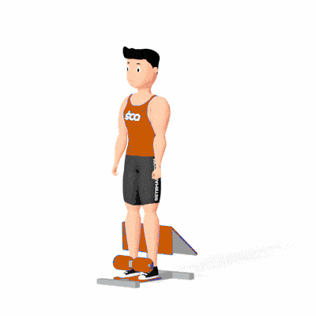

Abdominal no Sissy

Exercício para fortalecimento do reto abdominal e oblíquos, realizado na máquina Sissy para aumentar a amplitude de flexão do tronco. Indicado para praticantes de musculação nível intermediário e avançado.
Ficha Técnica
Tipo: Musculação
Grupo Muscular: Abdome
Aparelho: Nenhum
Músculos: Nenhum
Como realizar
- Ajuste a máquina e posicione-se com os pés firmes nos apoios e as coxas apoiadas no encosto;
- Mantenha a coluna alinhada e abdome contraído;
- Inspire e realize a flexão do tronco, aproximando o peito dos joelhos;
- Contraia o abdome no topo do movimento;
- Expire e retorne de forma controlada à posição inicial;
- Repita conforme prescrição.
 RC STORE
RC STORE